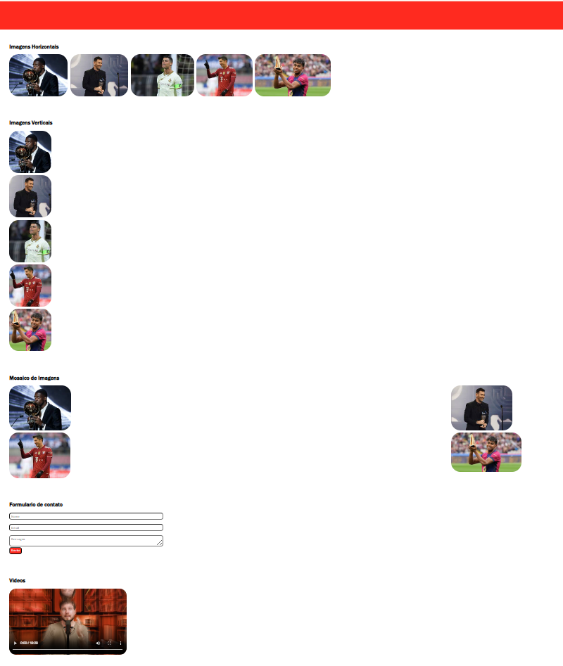

Grid Layout
Aprendendo sobre o Grid Layout, um modelo de layout em CSS que facilita a criação de layouts complexos e responsivos.
O que aprendi
Nessa aula, aprendi sobre o Grid Layout, um modelo de layout em CSS que facilita a criação de layouts complexos e responsivos. O Grid Layout permite que os elementos sejam organizados em uma grade, proporcionando um controle mais preciso sobre a disposição e o alinhamento dos elementos em uma página web. Aprendi como utilizar as propriedades do Grid Layout para controlar a criação de linhas e colunas, a distribuição do espaço e o posicionamento dos elementos. Além disso, tive a oportunidade de praticar aplicando o Grid Layout em meus projetos, o que me ajudou a entender melhor como criar layouts mais complexos e adaptáveis usando CSS.
O que desenvolvi
Nessa aula, consegui desenvolver a habilidade de usar o Grid Layout para criar layouts mais complexos e responsivos em meus projetos CSS. Pratiquei o uso de propriedades como display: grid, grid-template-columns, grid-template-rows, grid-column e grid-row para controlar a organização e o posicionamento dos elementos em minhas páginas web. Além disso, experimentei diferentes combinações dessas propriedades para criar layouts mais sofisticados e visualmente atraentes, o que me ajudou a entender melhor como o Grid Layout pode ser usado para resolver desafios comuns de layout em CSS.
Projeto(s)

Conhecimentos Adquiridos
- display: grid 100%
- grid-template-columns 100%
- grid-template-rows 100%
- fr e gaps 100%
Desafios
Um dos principais desafios ao trabalhar com Grid Layout é entender como as propriedades interagem entre si e como utilizar cada uma delas de forma eficaz para criar layouts desejados. Mas com a prática, esses desafios se tornam mais faceis e os resultados ficaram cada vez melhores.